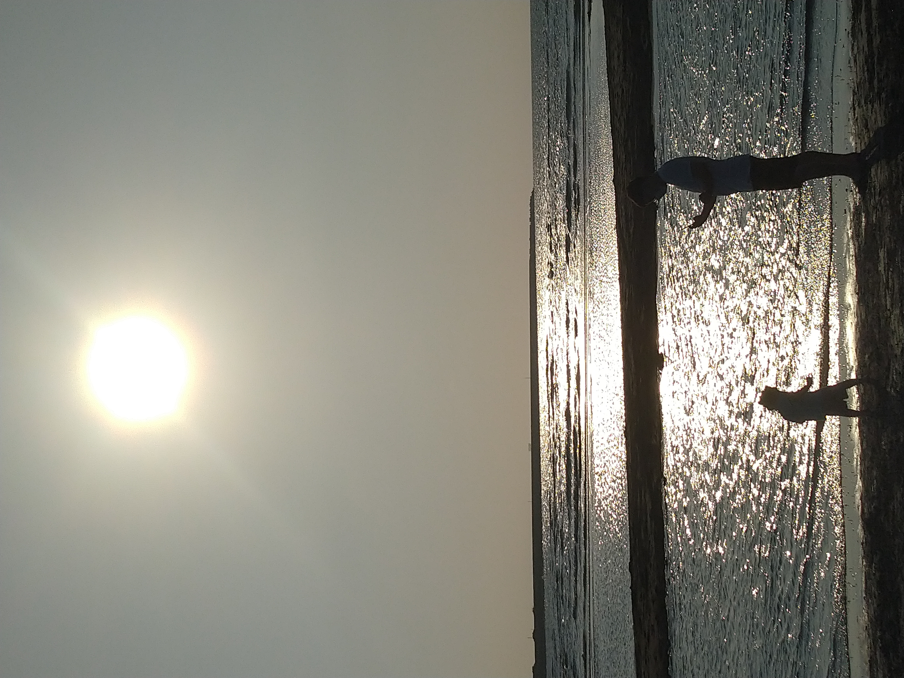
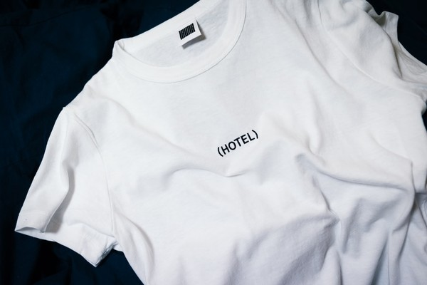

多媒體設計
多媒體設計
Photoshop
作業筆記：
1. 先將左邊建築物及比薩斜塔分割，再將比薩斜塔用鏡頭矯正轉正，再將兩張圖合併，最後用內容感知將空白部分補齊
| 原圖 | 編修 |
|---|---|
2. 透過將亮度調暗、對比調高，再利用色階調整亮部，使這張圖從一個爸爸正在拍小孩變成一人一獸的陰影正在對決
| 原圖 | 編修 |
|---|---|
|  |  |
3. 利用汙點修復，把衣服上的文字清除掉，順便把標籤也給清除
| 原圖 | 編修 |
|---|---|
|  |
4. 先調整亮度，使月亮變得更加明亮、明顯，再使用模糊收藏館中的光圈模糊，使除月亮之外，其餘部分都呈現模糊
| 原圖 | 編修 |
|---|---|
 |
5. 背景一張圖，鯊魚無去背貼在電視上、鯊魚、熊2隻用魔術棒+套索去背，大象、時鐘用魔術棒去背
6. 找一張背景，將兩張警告標誌用圖層遮色片，將三張圖合併
Premiere
作業筆記：